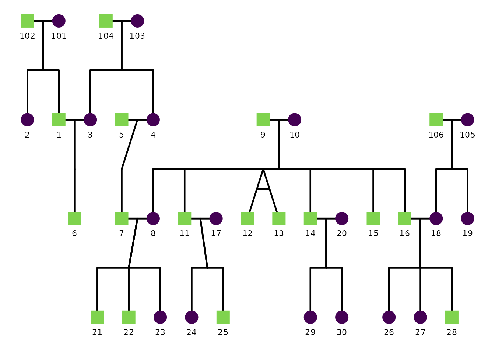

Using config to control ggpedigree plots
Source:vignettes/v02_configuration.Rmd
v02_configuration.Rmd
library(ggpedigree) # ggPedigree lives here
library(BGmisc) # helper utilities & example data
library(ggplot2) # ggplot2 for plotting
library(viridis) # viridis for color palettes
library(tidyverse) # for data wranglingThis vignette demonstrates how to use the config
argument to control the behavior of pedigree plots in the
ggpedigree package.
Every gg-based plotting function in ggpedigree accepts
a config argument. A config is a named list.
Each element corresponds to one plotting, layout, or aesthetic option.
You pass the list to the plotting function and the plot is drawn using
those values.
You do not need to supply every option. You only provide the options
you want to change. Any options you do not specify will use the package
defaults. You can see a full list of supported options and their
defaults by reviewing the documentation for
getDefaultPlotConfig().
This vignette demonstrates how config is used in
practice. An extended list of all available options is provided in the
online documentation.
Basic usage of config in ggPedigree()
We will use the potter pedigree dataset bundled in
BGmisc.
A basic pedigree plot uses defaults:
ggPedigree(
potter,
famID = "famID",
personID = "personID",
momID = "momID",
dadID = "dadID"
)
Sex coding: code_male and code_female
ggPedigree() (and other ggpedigree plots that use sex)
need to know how sex is encoded in your data so they can assign the
correct shapes (and optionally colors)
for female, male, and unknown.
The code_male and code_female config
options define which values in your sex column should be treated as male
vs female. The defaults assume:
code_female = 0code_male = 1
If your dataset uses different codes (for example 1/2 or
"M"/"F"), override these in config.
# Example: sex coded as 1 = male, 2 = female
ggPedigree(
ped,
famID = "famID",
personID = "personID",
momID = "momID",
dadID = "dadID",
config = list(
code_male = 1,
code_female = 2,
code_unknown = 3
)
)
# Example: sex coded as "M" / "F"
ggPedigree(
ped,
famID = "famID",
personID = "personID",
momID = "momID",
dadID = "dadID",
config = list(
code_male = "M",
code_female = "F"
)
)Once the sex codes are interpreted correctly, the plot uses the
corresponding shape settings (sex_shape_female,
sex_shape_male, sex_shape_unknown) and, when
enabled, sex-based coloring (sex_color_include,
sex_color_palette).
Advanced Examples
Additional examples are available in the online documentation to keep the package file size reasonable. These are provided as articles that demonstrate more complex pedigree plots. You can find these on the ggpedigree website.